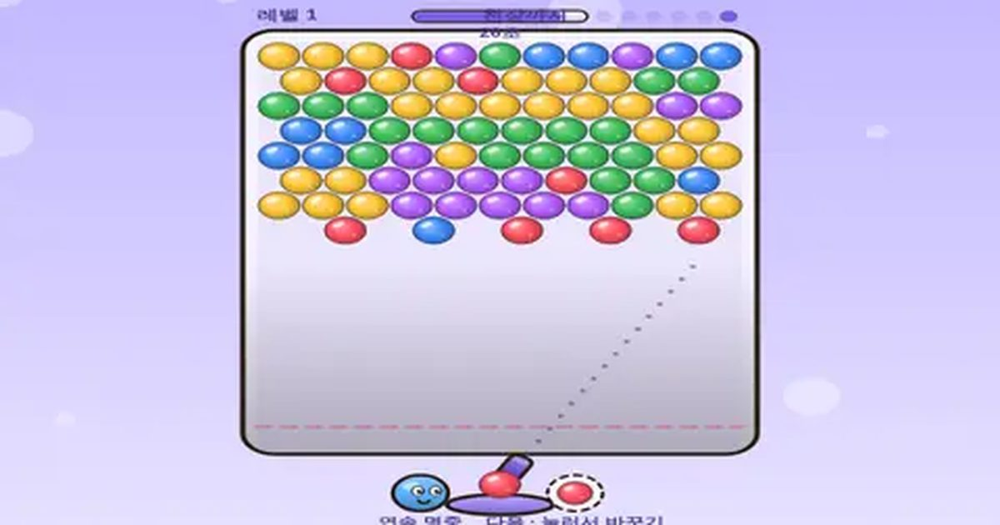

방울 터뜨리기
Bubble Pop
퍼즐 · 조준무료설치 없음폰 · PC
▶ 지금 바로 하기로그인 없이 브라우저에서 바로 시작돼요
어떤 게임인가요?
같은 색 방울 3개 이상을 붙여 터뜨리고, 매달린 방울을 통째로 떨어뜨리세요. 벽에 튕겨 쏘는 각도가 실력!
목표 · 같은 색 방울을 3개 이상 붙여 터뜨려 판을 비우세요. 아래 빨간 선에 닿으면 끝.
이렇게도 찾아요
버블 슈터풍선 터뜨리기구슬 쏘기구슬 맞추기bubble shooterbubble popbubble game
#버블슈터 #방울터뜨리기 #추억의게임
게임 방법
- 끌어서 조준, 떼면 발사. 벽에 맞으면 튕겨 나가요 (점선은 두 번 튕김까지 보여 줘요).
- 터진 방울 아래에 매달려 있던 방울은 우수수 떨어지고 점수 2배.
- 연속으로 터뜨리면 콤보 배율이 최대 ×4까지 올라가요.
- 헛쏘기가 쌓이면(왼쪽 위 점) 천장이 한 줄 내려와요.
- 오른쪽 아래 다음 방울을 누르면 지금 방울과 바꿀 수 있어요.
등장하는 것들
- 무지개 방울 · 어떤 색과도 붙어요
- 폭탄 방울 · 주변을 한 번에 터뜨려요
- 판 클리어 · 레벨 × 500점
이런 게임도 있어요
 사과 10 만들기퍼즐 · 두뇌 · 2분
사과 10 만들기퍼즐 · 두뇌 · 2분 타자 게임 · 낱말 비타자 연습 · 키보드
타자 게임 · 낱말 비타자 연습 · 키보드 무당벌레 미로미로 · 추격
무당벌레 미로미로 · 추격 무당벌레 꽃밭피하기 · 기울이기
무당벌레 꽃밭피하기 · 기울이기 씽씽 카트레이싱 · 아이템전
씽씽 카트레이싱 · 아이템전 과일 합치기퍼즐 · 물리
과일 합치기퍼즐 · 물리